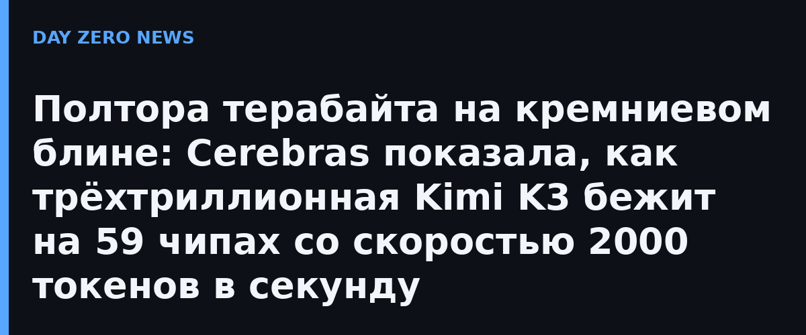

Пост Cerebras от 22 октября отвечает на частый вопрос: как модель, весящая больше терабайта, влезает в чип, у которого вообще-то немного памяти? Один кристалл WSE-3T несёт 44 ГБ внутрикристалльной SRAM, а весам триллионной модели нужны терабайты. Ответ — конвейер: модель режут по слоям, каждый блин хранит «свои» слои целиком и передаёт промежуточные результаты следующему, как узлы сборочной линии.
В качестве подопытной взята открытая Kimi K3 от Moonshot — 2,8–3 триллиона параметров, 69 слоёв линейного внимания и 24 плотных слоя. При 4-битном квантовании весов (как в реализации на Hugging Face) и 8-битном KV-кэше на слой приходится около 16 ГБ — на один блин встаёт несколько слоёв, а вся модель растягивается на 59 кристаллов. Заявленная скорость инференса — от 1000 до 2000+ токенов в секунду.
Обычные ускорители таскают веса из внешней HBM-памяти на каждый токен — именно узкое место «память–вычисление» ограничивает скорость генерации у GPU-кластеров. У wafer-scale подхода веса живут на самом кристалле и пропускная способность памяти на порядки выше. Для сравнения Cerebras приводит и бенчмарки K3: 88,3% на Terminal-Bench 2.1 против 88,8% у GPT-5.6 Sol и 91,2% на BrowseComp против 90,4% — то есть открытая модель уже идёт ноздря в ноздрю с флагманами, а теперь ещё и быстрее их на «железе» конкурента Nvidia.
Смысл поста не только в хвастовстве: Cerebras явно строит позиционирование «быстрый инференс открытых моделей» как альтернативу экосистеме CUDA — под открытые веса K3 уже есть квантованные сборки, а компания обещает, что та же механика масштабируется на «несколько триллионов» параметров. Рыночный спор переезжает из области «чья модель умнее» в область «чей токен быстрее и дешевле» — и это, пожалуй, самый заметный сдвиг недели для всех, кто оплачивает ИИ-инференс.